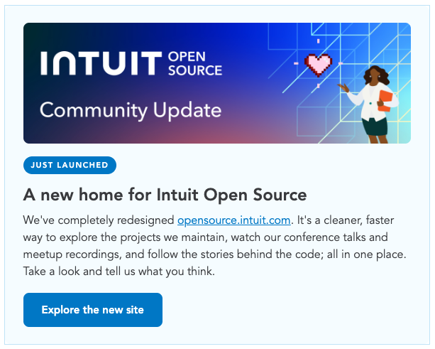

Intuit Open Source — Community Comms & Editorial Strategy
Intuit contributes back to open source at supermassive scale, on projects the whole industry runs on — and almost none of it was visible outside the company. I own every channel of communication to that external community: a three-pillar content framework, a shared taxonomy the team plans and measures against, and a documented monthly cadence so the program runs on a rhythm instead of on whoever remembers to post.
The Innovation
The projects themselves — deep dives into what we build at scale and why it matters.
Visionary · BoldThe Craft
Engineering excellence: how we solved it at scale, and the missteps worth admitting.
Honest · ExpertThe Community
Contributor spotlights, conference coverage, open calls for first-time contributors.
Warm · GratefulThe program is deliberately not bottlenecked on me: every category has a domain expert and a named backup, anyone can drop an idea into an open channel, and every post credits its contributors. Scheduling runs in Monday.com against a shared calendar, with an approval gate before anything ships.
An external developer community grown past 20,000 on the distribution list. Every issue I've sent is public in the archive.